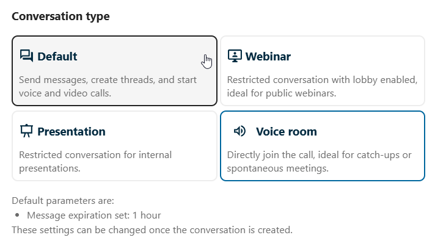

Préréglages de conversations
Les préréglages de conversations permettent aux administrateurs de définir des modèles pour les nouvelles conversations, avec des paramètres préconfigurés comme les permissions, les règles de salle d’attente et les types de conversation.
Préréglages disponibles
Selon la configuration de votre instance, vous pouvez voir les préréglages au moment de la création d’une nouvelle conversation. Chaque préréglage applique un jeu spécifique de paramètres par défaut adapté à un cas d’utilisation particulier.


Salon vocal
Une salle de permanence (« Salon vocal ») est un préréglage de conversation optimisé pour des réunions non obligatoires et toujours disponibles. Toute personne qui entre dans la conversation est intégrée à l’appel en cours qui s’y tient, ce qui facilitera la communication. Les messages dans une conversation de salon vocal sont configurés pour expirer après un certain temps afin qu’elle reste légère et spontanée.
Webinaire
Les modérateurs peuvent configurer un préréglage pour imposer une salle d’attente et ainsi garantir que les participants attendent un modérateur avant de rejoindre la conversation. Quand une conversation utilise un préréglage de salle d’attente imposée :
Les participants voient une salle d’attente à leur arrivée
Un modérateur doit les autoriser à rejoindre la conversation ou supprimer la salle d’attente
Utile pour les webinaires, les interviews ou les réunions maîtrisées
Présentation
Le préréglage pour les présentations est utile pour les réunions internes dans lesquelles il y a souvent plus d’auditeurs que d’intervenants. Les permissions des participants sont optimisées pour garantir les meilleures performances et permettre la modération afin que les présentateurs puissent parler sans être interrompus.
Voir aussi :